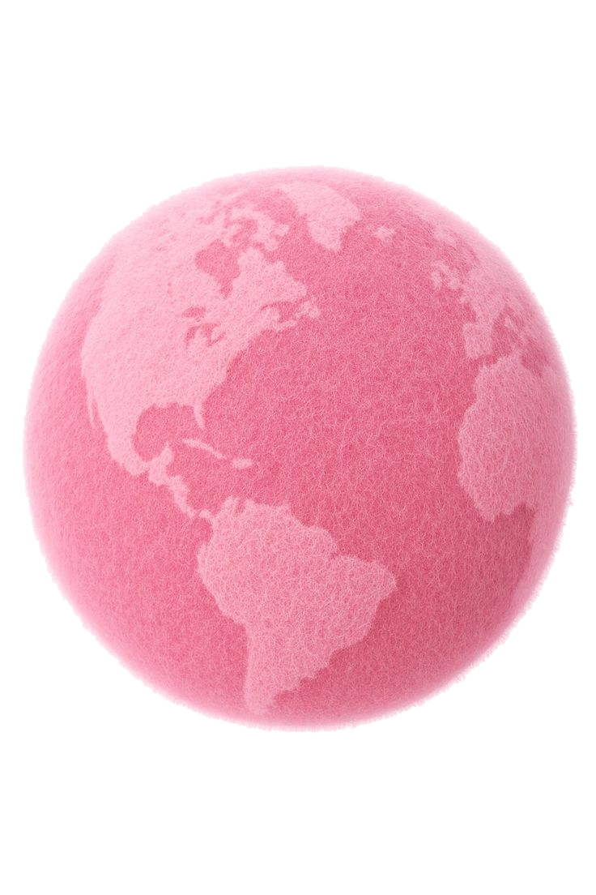
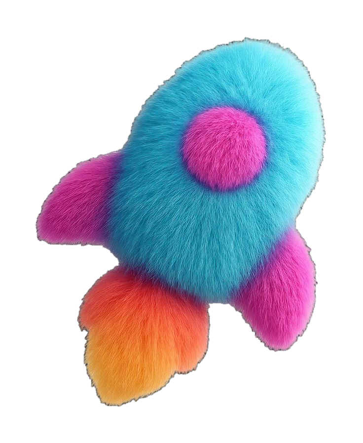
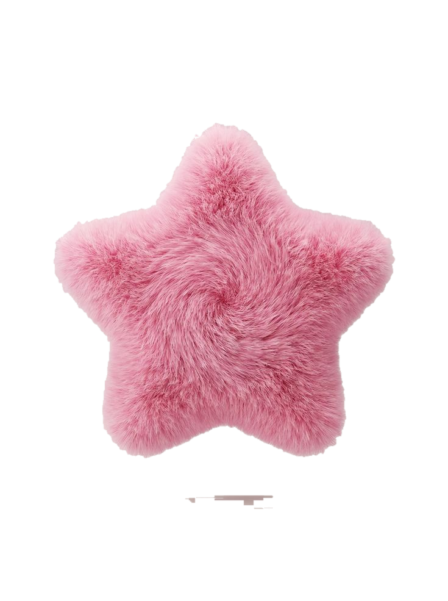

A World by Altava
Planet Selah
잠들지 않는 행성
Starship 아티스트의 데뷔와 활동, 그 사이의 모든 시간을
하나의 우주적 서사로 감싸는 세계관
Altava Group × Starship · 2026


태초의 행성, 그리고 작은 정령들
아주 먼 옛날,
우주가 막 눈을 뜨던 무렵의 이야기예요.
별도, 노래도, 무대도 없던 그때 —
우주의 가장 오래된 자리에 작은 행성 하나가 떠 있었어요.
그곳엔 작은 정령들이 살며, 매일 작은 식물을 정성껏 돌봤죠.
Planet Selah는 지구도, 인간도, 그 어떤 회사도 생겨나기
훨씬 전부터
존재해 온 가장 오래된 행성입니다.
The Spirits · 동물 정령
한 사람마다 오직
하나의 정령
이 있습니다.
동물의 모습을 한 작은 정령은, 지구 아티스트 한 명의 분신이자 평생의 짝입니다.
정령 1 ↔ 아티스트 1
한 정령은 한 아티스트의 평생을,
데뷔 이전부터 은퇴 이후까지
함께합니다.
팬을 대신하는 손
정령은 팬을 대신해
아티스트 편에서 식물을 키우고
별을 보냅니다.
가장 오래된 인연
“당신은 모르지만,
당신을 가장 오래전부터 알고 있는 누군가
가 그곳에 있습니다.”
정성이 별이 되어, 한 사람에게 닿다
정성이 쌓이고 쌓이면, 식물 끝에 작은
별
이 맺혔어요.
정령은 그 별을 두 손에 받쳐, 하늘 높이 띄워 보냈죠.
별은 빛이 되어 우주를 건너, 늘 정해진 한 사람에게 닿았어요.
사람들은 그를 이렇게 불렀죠 —
스타(star)

.
The Cycle · 별이 맺히기까지
정령은 별을
직접 만들지 않습니다.
식물을 키워 별이
맺히게
합니다.
💧
양분
팬의 응원이
정령의 양식이 됨
🌱
식물 양육
매일 물 주고
노래 불러 돌봄
⭐
별 결실
가지 끝에
별이 맺힘
🌌
하늘에 띄움
별빛이 우주를
가로질러 감
🌟
아티스트에 도달
응원의 빛으로
그를 빛나게 함
별은 하루아침에 생기지 않습니다.
매일의 돌봄이 쌓여야
비로소 맺힙니다 — 꾸준함과 정성의 상징입니다.
The Stars · 별의 의미
별은
응원의 빛
을 담은 매개체입니다.
⭐⭐⭐⭐
별
1 : n
아티스트
한 아티스트에게는 수많은 별이 닿습니다.
별이 많을수록, 밝을수록 그는 더 환하게 빛납니다.
그가
‘스타(star)’
인 이유는
그에게 별빛이 닿았기 때문입니다.
한 명의 아티스트는 결코 혼자 빛나지 않습니다.
그를 빛나게 한 것은
수많은 별을 보낸 존재들
정령과, 그 정령에게 양분을 건넨 팬들입니다.
The Law · 시간차 우주론
별빛은
즉시 도달하지 않습니다.
지금 아티스트가 받는 빛
= 정령이
오래전에
키워 띄운 별
지금 정령이 띄우는 별
=
먼 훗날
아티스트에게 닿을 빛
이 한 칸의 시간차가, 현실의 모든 순간을 다시 읽게 합니다.
데뷔
갑작스러운 사건이 아니라,
오래전 예정된 빛의 도착.
공백기
빈 시간이 아니라,
빛이 우주를 건너오는 중
인 시간.
컴백 (또는 활동기)
준비되어 있던 빛이
마침내 도착하는
순간.
The Life · 정령의 생애
데뷔 전에도, 정령은
이미
별을 키우고 있었습니다.
새 아티스트가 준비될 때마다 행성에는
새로운 정령이 태어납니다.
갓 태어난 정령이 가장 먼저 띄운 별은, 먼 훗날
데뷔 첫 무대
에 닿습니다.
탄생
정령이 깨어나
첫 씨앗을 심음
연습생기
첫 별을 키워
이미 하늘로 띄움
데뷔
가장 오래전 별의
첫 도착
활동기·공백기
쉼 없이 다음 별을
키우고 적립
그 이후
띄운 별이
오래도록 도착
“네가 데뷔하기 한참 전부터,
나는 별을 키우고 있었어.
”
그래서, 행성은 잠들지 않아요
별빛이 건너오는 덴 아주 오랜 시간이 걸려요.
누군가 처음 무대에 서는 날, 그 빛은 오래전부터 키워진 별이었답니다.
당신을
가장 오래전부터 알고 있는 누군가
가 그곳에 있어요.
Planet Selah
당신이 무대에서 빛나는 동안에도,
빛이 보이지 않는 동안에도,
Selah의 작은 정령은 오늘도
물을 주고, 노래를 부르고, 별을 따고 있습니다.
행성은, 잠들지 않습니다.
ALTAVA GROUP · 2026
‹
세계관
1 / 10
›
← → 또는 클릭·스와이프로 이동